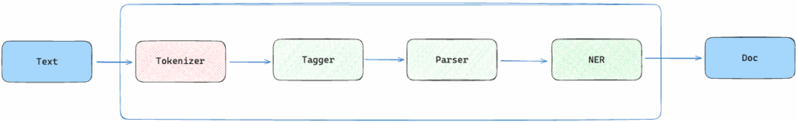
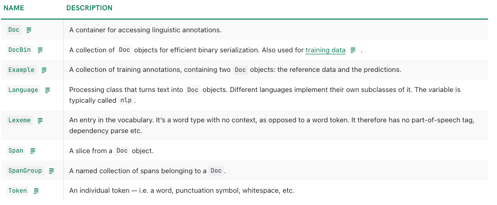
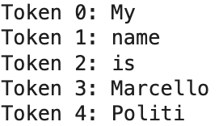
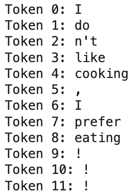
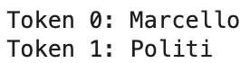
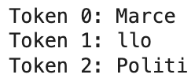
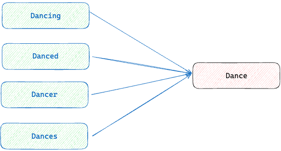
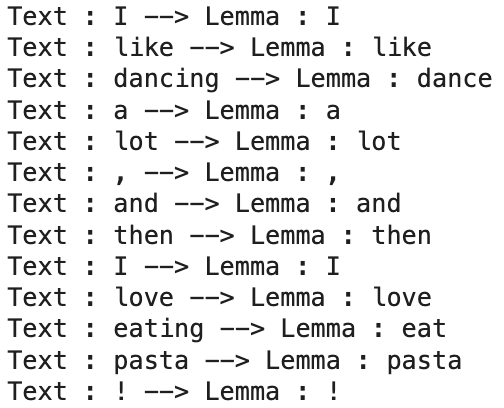

Learn about Tokenization, Lemmatization and the Core Operations with SpaCy
Mastering NLP with spaCY — Part 1.
August 27, 2025 · NLP, SpaCy
Natural Language Processing, or NLP, is a part of AI that focuses on understanding text. It’s about helping machines read, process, and find useful patterns or information within a text, for our apps. SpaCy is a library that makes this work easier and faster.
Many developers today use huge models like ChatGPT or Llama for most NLP tasks. These models are powerful and can do a lot, but they’re often costly and slow. In real-world projects, we need something more focused and quick. This is where spaCy helps a lot.
Now, spaCy even lets you combine its strengths with large models like ChatGPT through the spacy-llm module. It's a great way to get both speed and power.
Installing Spacy
Copy and paste the next commands to install spaCy with pip.
In the following cells, substitute the “&ndash “ with “-”.
python -m venv. env source
.env/bin/activate
pip install -U pip setuptools wheel
pip install -U spacySpaCy doesn’t come with a statistical language model, which is needed to perform operations on a particular language. For each language, there are many models based on the size of the resources used to build the model itself.
All the languages supported are listed here: https://spacy.io/usage/models
You can download a language model via the command line. In this example, I am downloading a language model for the English language.
python -m spacy download en_core_web_smAt this point, you are ready to use the model with the load() functionality
import spacy nlp = spacy.load("en_core_web_sm")
doc = nlp("This is a text example I want to analyze")SpaCy Pipeline
When you load a language model in spaCy, it processes your text through a pipeline that you can customise. This pipeline is made up of various components, each handling a specific task. At its core is the tokenizer, which breaks the text into individual tokens (words, punctuation, etc.).
The result of this pipeline is a Doc object, which serves as the foundation for further analysis. Other components, like the Tagger (for part-of-speech tagging), Parser (for dependency parsing), and NER (for named entity recognition), can be included based on what you want to achieve. We will see what Tagger, Parser and NER mean in the upcoming articles.

import spacynlp = spacy.load("en_core_web_md")
doc = nlp("My name is Marcello")We will get familiarity with many more container objects provided by spaCy.
The central data structures in spaCy are the Language class, the Vocab and the Doc object.
By checking the documentation, you will find the whole list of container objects.

Tokenization with spaCy
In NLP, the first step in processing text is tokenization. This is crucial because all subsequent NLP tasks rely on working with tokens. Tokens are the smallest meaningful units of text that a sentence can be broken into. Intuitively, you might think of tokens as individual words split by spaces, but it’s not that simple.
Tokenization often depends on statistical patterns, where groups of characters that frequently appear together are treated as single tokens for better analysis.
You can play with different tokenizer on this hugging face space: https://huggingface.co/spaces/Xenova/the-tokenizer-playground
When we apply nlp() to some text in spacy, the text is automatically tokenized. Let’s see an example.
doc = nlp("My name is Marcello Politi")
for token in doc:
print(token.text)
From the example looks like a simple split made with text.split(“”). So let’s try to tokenize a more complex sentence.
doc = nlp("I don't like cooking, I prefer eating!!!")
for i, token in enumerate(doc):
print(f"Token {i}:",token.text)
SpaCy’s tokenizer is rule-based, meaning it uses linguistic rules and patterns to determine how to split text. It is not based on statistical methods like modern LLMs.
What is interesting is that the rules are customizable; this gives you full control over the tokenization process.
Also, spaCy tokenizers are non-destructive, which means that from the token you will be able to recover the original text.
Let’s see how to customize the tokenizer. In order to accomplish this, we just need to define a new rule for our tokenizer, we can do this by using the special ORTH symbol.
import spacy
from spacy.symbols import ORTH
nlp = spacy.load("en_core_web_sm")
doc = nlp("Marcello Politi")
for i, token in enumerate(doc):
print(f"Token {i}:",token.text)
I want to tokenize the word “Marcello” differently.
special_case = [{ORTH:"Marce"},{ORTH:"llo"}]
nlp.tokenizer.add_special_case("Marcello", special_case)
doc = nlp("Marcello Politi")
for i, token in enumerate(doc):
print(f"Token {i}:",token.text)
In most cases, the default tokenizer works well, and it’s rare for anyone to need to modify it, usually, only researchers do.
Splitting text into tokens is easier than splitting a paragraph into sentences. SpaCy is able to accomplish this by using a dependency parser; you can learn more about it in the documentation. But let’s see how this works in practice.
import spacy
nlp = spacy.load("en_core_web_sm")
text = "My name is Marcello Politi. I like playing basketball a lot!"
doc = nlp(text)
for i, sent in enumerate(doc.sents):
print(f"sentence {i}:", sent.text)Lemmatization with spaCy
Words/tokens can have different forms. A lemma is the base form of a word. For example, “dance” is the lemma of the words “dancing”, “danced”, “dancer”, “dances”.
When we reduce words to their base form, we are applying lemmatisation.

In SpaCy we can have access to words lemma easily. Check the following code.
import spacy
nlp = spacy.load("en_core_web_sm")
doc = nlp("I like dancing a lot, and then I love eating pasta!")
for token in doc:
print("Text :", token.text, "--> Lemma :", token.lemma_)
Final Thoughts
Wrapping up this first part of this spaCy series, I’ve shared the basics that got me hooked on this tool for NLP.
We covered setting up spaCy, loading a language model, and digging into tokenization and lemmatization, the main steps that make text processing feel less like a black box.
Unlike those massive models like ChatGPT that can feel overkill for smaller projects, spaCy’s lean and fast approach fits the needs of many projects perfectly, especially with the option of also using those big models through spacy-llm when you want extra power!
In the next part, I’ll walk you through how I use spaCy’s named entity recognition and dependency parsing to tackle real-world text tasks. Stick with me for Part 2, it’s going to get even more hands-on!
 Linkedin ️| X (Twitter) | Websitelinkedin.com
Linkedin ️| X (Twitter) | Websitelinkedin.com